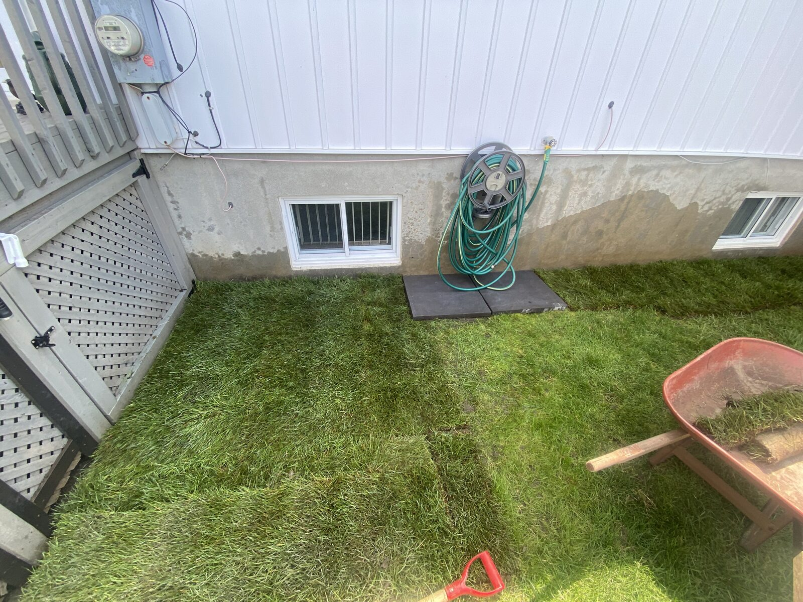
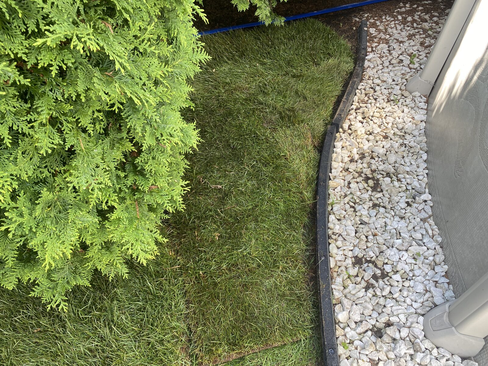
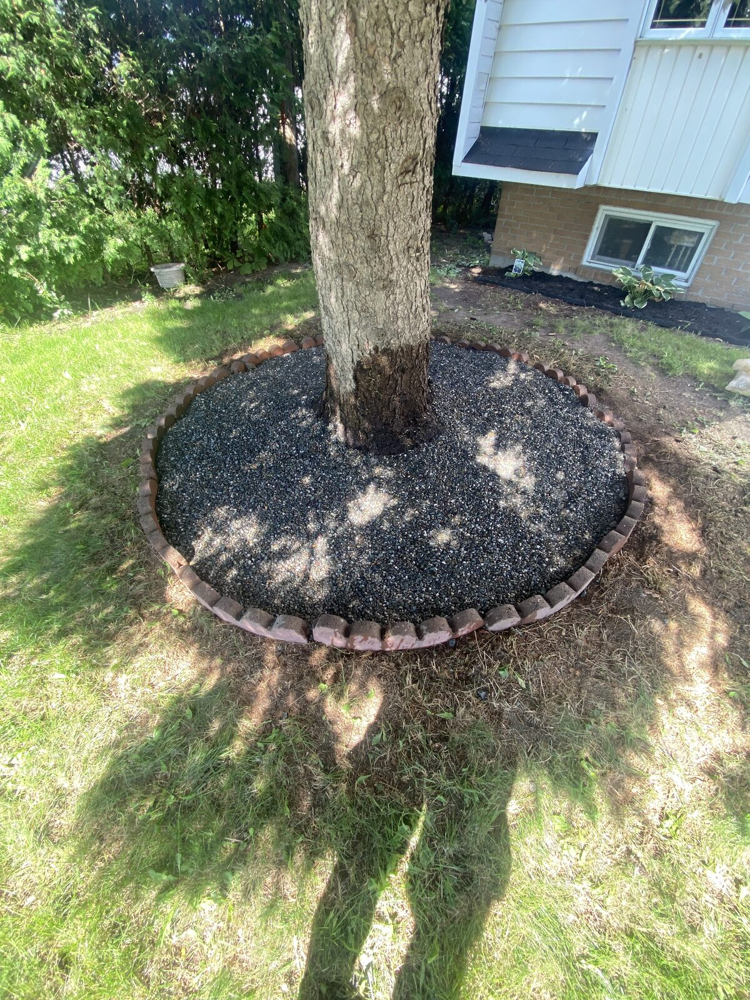

Nous créons des espaces verts qui reflètent votre vision, adaptés à votre terrain et à vos besoins.
Chaque projet de paysagement est unique. Nous travaillons avec vous pour concevoir et réaliser des aménagements extérieurs durables et esthétiques — de l'ouverture du terrain jusqu'à la touche finale. Que ce soit pour un projet complet ou un besoin spécifique, notre équipe s'adapte à vos exigences.
Installation de tourbe en plaques pour un résultat immédiat et une pelouse uniforme et dense dès le premier jour.
Création et aménagement de plates-bandes florales et arbustives pour embellir les pourtours de votre propriété.
Préparation et ouverture de terrains, nivellement et déblaiement pour accueillir vos nouveaux aménagements extérieurs.
Semis de gazon pour les zones à rétablir ou les nouvelles surfaces. Un engazonnement propre, uniforme et durable.
Enlèvement des mauvaises herbes, des feuilles mortes et des débris pour garder vos plates-bandes nettes et saines tout au long de la saison.
Chaque propriété a ses propres besoins. Contactez-nous pour discuter de votre projet spécifique — nous trouverons la meilleure solution pour vous.
Aperçu de nos réalisations.



Obtenez une soumission gratuite et sans engagement. Notre équipe est prête à évaluer votre espace et à vous proposer un plan personnalisé.
Demander une soumission gratuite